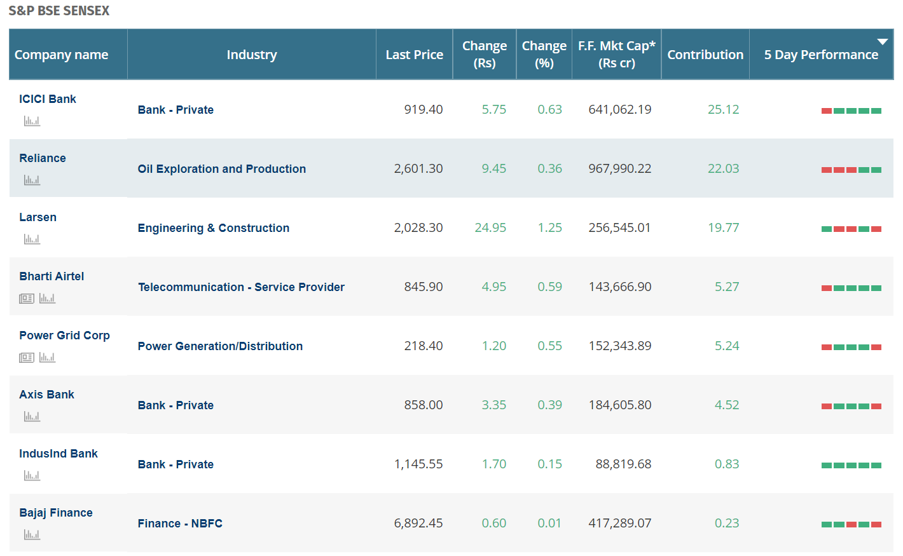

The bse sensex (also known as the s&p bombay stock exchange sensitive index or simply sensex) is a free-float market-weighted stock market index of 30 well-established and financially sound companies listed on the bombay stock exchange. the 30 constituent companies which are some of the largest and most actively traded stocks, are representative of various industrial sectors of the indian economy. published since 1 january 1986, the s&p bse sensex is regarded as the pulse of the domestic stock markets in india. the base value of the sensex was taken as 100 on 1 april 1979 and its base year as 1978–79. on 25 july 2001 bse launched dollex-30, a dollar-linked version of the sensex.
